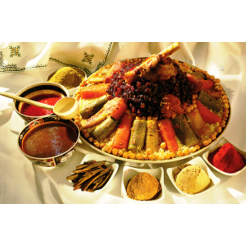

couscous

Description
In Morocco the term “couscous” refers to a whole dish made usually of meat and vegetables cooked in a delicious broth served on a bed of steamed semolina granules (aka couscous!).
This fundamental dish to Moroccan cuisine is cooked in large quantities and is commonly enjoyed on the national Moroccan holy day, Friday. Couscous is usually served in a communal dish and represents the opportunity to gather and share with family and friends.
Ingredients
Here is a list of ingredients used to prepare a 7-vegetable couscous :
- Smid or Couscous grains
- Meat or chiken
- Onion
- Carrot
- Radish
- Tomato
- Zucchini
- Garlic
- Eggplant
- Olive oil
- Local spices
Steps
- Brown the lamb on all sides in a large pot with some olive oil.
- Add the spices and onion and sauté until translucent before tossing in the cubed carrots.
- Toss in the zucchini, eggplant, and cabbage.
- Cut the other vegetables
into slices and add them to the Tajin
- Put the couscous in a the "Kaskass" top of the pot
- Serve the couscous first, then top carefully with vegetables, finally pouring the broth over the top.